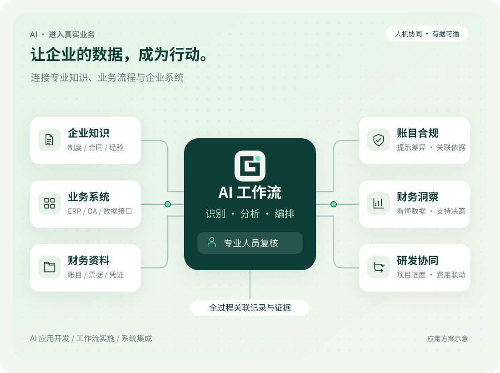
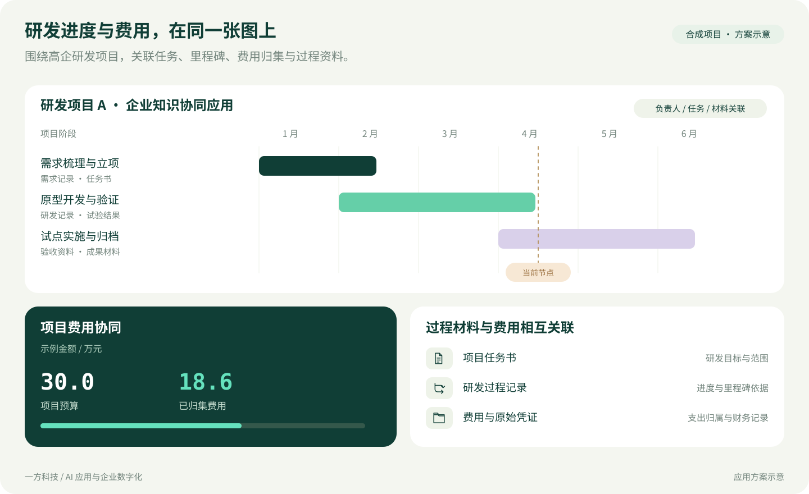
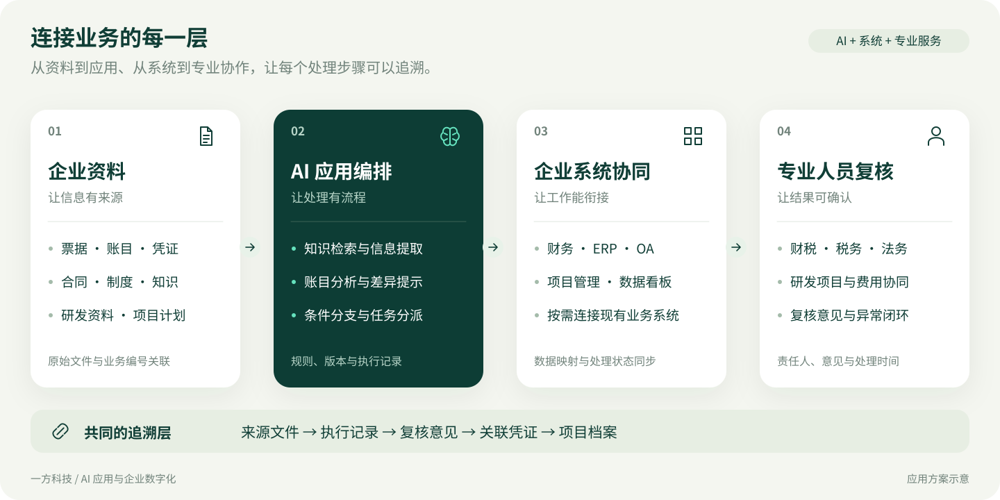

AI 应用与智能分析
围绕账目、合同、文档和企业知识，设计识别、检索、分析与内容辅助应用。
- 账目差异与合规线索分析
- 财税法务知识与资料检索
- 经营数据分析与可视化
AI FOR REAL BUSINESS
一方科技 · 企业 AI 应用与系统服务
以财税、法务与经营实践为基础，连接 AI 应用、业务工作流和企业系统。让账目分析有依据，让研发进度与费用相互看见，让日常协作更高效。

01 / WHAT WE DO
围绕企业真实的工作流程，设计应用、连接系统、协同人员。让 AI 能力与业务规则一起落地。
围绕账目、合同、文档和企业知识，设计识别、检索、分析与内容辅助应用。
把资料、规则、AI 处理与人工确认串起来，让重复工作有流程，关键判断有记录。
结合企业现有工具和管理习惯，推进 ERP、管理系统、数据接口与定制应用的衔接。
税务协同 · 财税管理 · 法务合规 · 高企与研发 · 科技成果转化
AI IN YOUR BUSINESS
从账目中的异常线索，到经营数据与研发项目进展。把分散的信息连接起来，让专业判断有依据，让协作更清晰。
应用场景包括 AI 账目辅助分析、财务数据可视化，以及高企与研发项目管理。开启 JavaScript 后，可切换查看交互示例。
本区域为能力与流程示意，全部业务数据均为合成示例；各场景与静态图为独立样本，不作跨场景汇总。不会读取或上传账目，也不连接真实查验、申报或认定系统。
03 / R&D CONNECTED TO FINANCE
围绕高新技术企业的日常项目管理，把立项、研发任务、阶段成果、费用归集与支撑材料放在同一条业务线上。
关联负责人、里程碑、研发记录和测试验收资料，及时发现任务与材料的缺口。
关联人员投入、领料、设备使用、合同和凭证，辅助整理预算与已归集费用。
组织技术成果、知识产权及成果转化资料，为项目复盘与高企相关材料准备提供清晰目录。

会计核算、高企认定与研发费用加计扣除采用的归集口径存在差异；系统可辅助整理与对照，具体适用由专业人员确认。
04 / CONNECT THE WHOLE WORKFLOW
从企业现有业务出发，把资料输入、规则处理、AI 辅助、人员复核与结果留存连接起来。

财税业务票据与凭证 · 账目分析 · 经营信息
法务协同合同资料 · 条款提示 · 审批与留痕
研发管理项目进度 · 费用关联 · 成果材料
05 / FROM ONE TASK TO DAILY USE
先把问题和评价方式说清楚，再推进应用与系统实施，用实际工作中的变化评估效果。
了解岗位、数据来源、现有工具与反复发生的问题。
形成：场景清单与流程图选取样本，验证 AI 辅助、规则处理与人工复核的配合方式。
形成：应用原型与验证记录按约定范围开展开发、配置、数据衔接和人员培训。
形成：系统配置与使用说明观察流程耗时、重复录入、资料缺项及返工情况，持续优化。
形成：使用反馈与改进清单ABOUT YIFANG
一方科技，源自内蒙古一方财务代理有限公司的专业实践。我们服务中小企业，将财税、税务、法务相关业务需求，与 AI 应用、工作流及企业系统的开发实施相结合。
从日常账目到研发项目，从分散资料到协同流程，我们关注技术在具体工作中的使用价值，让企业管理更清晰、协作更高效，并连接科技成果与实际应用。
BEFORE WE START
可以先梳理现有系统之间的资料流转、重复录入与人工处理环节，再评估数据接口、工作流或辅助应用如何补充现有系统。
辅助整理资料、发现差异、检索规则和生成复核线索。具体业务判断由相应专业人员完成，处理依据与意见可纳入业务记录。
以项目为线索关联立项、阶段任务、研发记录、人员与费用材料，让项目负责人和财务人员能够围绕同一项业务协作。
LET’S MAKE WORK WORK BETTER
告诉我们业务场景、当前做法，以及希望改善的地方。